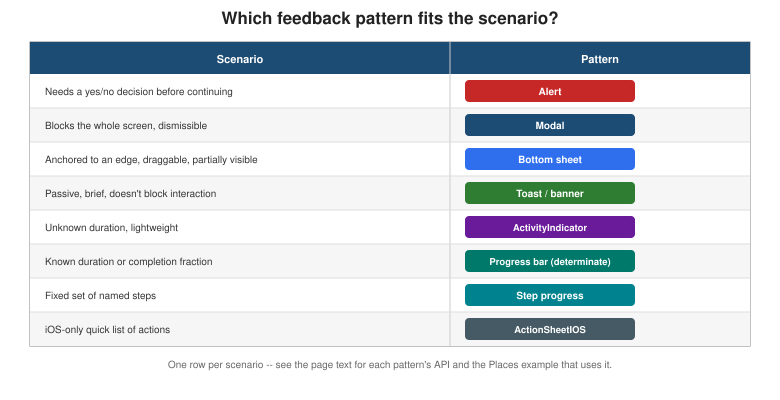

Modals, Alerts, and Progress
|
This content was generated with the assistance of AI and should be verified against the official documentation before being relied on in production. |
Animations covered Reanimated’s shared values, worklets, and layout animations. This page turns to the feedback UI patterns that sit on top of (and sometimes alongside) those animations: alerts that demand a decision, modals and sheets that present a screen over the current one, passive toasts that never block interaction, and the activity/progress indicators that tell a user something is happening in the background.
Vocabulary
The five terms below are used precisely and consistently throughout this page, because React Native’s own APIs blur them less than casual usage does:
-
Alert — a small native dialog that demands a decision before the user can continue interacting with the rest of the screen.
-
Modal — a full or partial screen presented over the current one, dismissible without necessarily requiring a decision.
-
Sheet — a modal anchored to an edge of the screen, usually the bottom, that can be partially visible and draggable rather than fully covering the screen at once.
-
Toast — a brief, passive, self-dismissing notification that does not block interaction with the rest of the screen.
-
Activity indicator — a spinner or progress bar that communicates that something is in progress, with or without a known completion fraction.
Alert
Alert.alert(title, message, buttons) is React Native’s cross-platform wrapper around each platform’s native
alert dialog. buttons is an array of up to three { text, onPress, style } objects, where style is
'default', 'cancel', or 'destructive' — 'cancel' renders the button with the platform’s own
de-emphasized styling (bold on iOS, positioned first on Android), and 'destructive' renders it in the
platform’s own warning color (red on iOS), with no visual difference from 'default' on Android beyond position.
A fourth, optional argument, options, carries cancelable (Android only — whether tapping outside the alert
or pressing the back button dismisses it without invoking any button) and onDismiss (Android only — called
when the alert is dismissed without any button being pressed).
Two canonical uses cover almost every alert Places needs:
-
A confirmation. Two buttons,
'cancel'and'destructive', gating a destructive action behind an explicit choice — the "delete place?" example below. -
An error report. A single
'default'button, usually labeled "OK", surfacing a failed mutation without offering any choice beyond acknowledging it.
Alert.alert(
'Delete place?',
'This cannot be undone.',
[
{ text: 'Cancel', style: 'cancel' },
{ text: 'Delete', style: 'destructive', onPress: () => deletePlace.mutate(place.id) },
],
);
Alert.alert('Could not save place', error.message, [{ text: 'OK' }]);Modal
Modal renders its children in a native overlay above the rest of the app, outside the normal view hierarchy:
-
visible— a boolean controlling whether the modal is mounted and shown; unlike conditionally rendering the modal’s content directly,Modalhandles its own native presentation/dismissal animation around this flag. -
animationType—'none','slide'(slides up from the bottom), or'fade'. -
presentationStyle(iOS only) —'fullScreen'(the default, covers the whole screen),'pageSheet'(a card inset from the screen edges, the standard iOS "form sheet" look),'formSheet'(a smaller, centered card), or'overFullScreen'(full screen, but allows the content beneath to show through a transparent background). -
transparent— renders the modal over a transparent background instead of an opaque one, which is what turnsModalinto a dimmed-backdrop dialog rather than a full replacement screen: atransparentmodal whose content is a centered card with a semi-opaquebackgroundColor: 'rgba(0, 0, 0, 0.4)'wrapper behind it is the standard cross-platform recipe for that look. -
onRequestClose— required on Android, where it is called for the hardware/gesture back action; without it, Android has no way to close the modal short of the app supplying its own explicit close button.
A bottom sheet is a further specialization of a modal: anchored to the bottom edge, and often partially
visible or draggable to intermediate snap points rather than simply open or closed. Modal with
presentationStyle="pageSheet" and animationType="slide" covers the simplest cross-platform case — a sheet
that is either fully open or fully closed, with no intermediate drag state. Anything beyond that — partial-height snap points, drag-to-dismiss, a sheet that coexists with the screen behind it staying interactive — calls for a dedicated library, and @gorhom/bottom-sheet is the go-to choice for it in the React Native
ecosystem.
Passive Notifications and Activity Indicators
ToastAndroid
ToastAndroid.show(message, ToastAndroid.SHORT | ToastAndroid.LONG) shows Android’s native toast — a small,
auto-dismissing banner near the bottom of the screen. It is Android-only: there is no iOS equivalent in React
Native’s own API at all, so a cross-platform toast needs either a small custom in-app banner component (an
absolutely positioned view that fades in and out, built on the same Animated/Reanimated mechanics
Animations covers in full) or a third-party library such as
react-native-toast-message.
ActivityIndicator
ActivityIndicator is the standard indeterminate spinner: "something is happening, no known duration". size
is 'small' or 'large', and color tints the spinner to match the surrounding UI — no other configuration
exists, because an indeterminate spinner has nothing else to communicate.
Determinate Progress
An indeterminate spinner is the wrong tool the moment a completion fraction, or a fixed set of steps, is actually known:
-
A measured fraction (
0..1). The Places sync-progress bar below is the canonical example: a plainViewwhose innerView’s `widthis driven by a numeric fraction, rendered as a percentage string. -
Step progress. A fixed sequence of named steps — a multi-step "add place" wizard, for example — shown as a row of filled/unfilled dots or segments, one per step, rather than a single continuously moving fraction.
-
Navigation indicators. A thin bar under a screen’s header showing progress through a multi-screen flow, such as a three-step onboarding sequence — the same filled/unfilled-segment idea as step progress, but positioned as chrome above the screen’s own content rather than inside it.
Activity Modals
A transparent Modal with a dimmed backdrop containing nothing but a centered ActivityIndicator blocks
interaction with the whole screen during a short operation. This pattern is legitimate but should be rare:
prefer an inline, non-blocking indicator wherever the operation is scoped to one control — a Save button that
disables itself and swaps its label for a small ActivityIndicator communicates the same "in progress" state
without freezing the rest of the screen, and is almost always the better choice than a full-screen activity
modal for anything short of a genuinely blocking, whole-screen operation (an initial app-wide data load, for
example).
StatusBar
StatusBar controls the OS status bar’s appearance: barStyle ('default', 'light-content' for light text
on a dark background, or 'dark-content' for dark text on a light background), backgroundColor (Android
only — the status bar’s own background color, ignored on iOS where it is always transparent over the app’s
content), and hidden. Places derives barStyle directly from useTheme().dark so status-bar text stays
legible against whichever theme is active:
<StatusBar barStyle={theme.dark ? 'light-content' : 'dark-content'} />Share
Share.share({ message, url, title }) opens each platform’s native share sheet — the same system UI a user
sees sharing from any other app — letting Places share a place’s name and notes without building any
share-target UI of its own:
Share.share({
message: `${place.name}\n${place.notes}`,
title: place.name,
});Vibration and Haptics
Vibration.vibrate(pattern) triggers raw device vibration — a single duration in milliseconds, or a pattern
array alternating pause/vibrate durations. expo-haptics’s `Haptics.impactAsync(Haptics.ImpactFeedbackStyle.Light)
(and its .Medium/.Heavy variants, plus notificationAsync/selectionAsync) is the more nuanced alternative:
on iOS it drives the Taptic Engine’s own distinct impact styles rather than a single undifferentiated buzz, and
it degrades to a plain vibration on Android. Places's own HapticTap Turbo Native Module — built on the same
running-app model and covered in full on
Native Modules and Components — is the
fully-custom-native alternative to both, reached for only when an app needs a haptic style neither Vibration
nor expo-haptics exposes directly.
ActionSheetIOS
ActionSheetIOS.showActionSheetWithOptions presents iOS’s native bottom action sheet: an options list plus
indices identifying which option (if any) is the destructive one and which is the cancel button.
showShareActionSheetWithOptions is the same sheet specialized for sharing. Both are iOS-only, with no Android
equivalent at all; the cross-platform equivalent is a Modal-based sheet built by hand, or a library such as
@expo/react-native-action-sheet that renders its own sheet on Android while delegating to the native
ActionSheetIOS on iOS.

Places: Confirming, Presenting, Progressing, and Confirming Again
(a) Confirming a Delete with Alert.alert
touches-and-gestures.adoc’s `SwipeablePlaceRow calls deletePlace.mutate(place.id) directly from its delete
action’s onPress; gating it behind a confirmation Alert is the only change needed, since useDeletePlace()
itself is untouched:
// src/features/places/components/SwipeablePlaceRow.tsx (excerpt -- confirms before deleting)
import { Alert, Pressable, Text } from 'react-native';
import { useDeletePlace } from '../hooks/useDeletePlace';
import type { Place } from '../types';
function confirmDelete(place: Place, onConfirm: () => void) {
Alert.alert(
'Delete place?',
`"${place.name}" will be removed permanently.`,
[
{ text: 'Cancel', style: 'cancel' },
{ text: 'Delete', style: 'destructive', onPress: onConfirm },
],
);
}
// inside SwipeablePlaceRow's renderRightActions:
<Pressable
style={styles.deleteAction}
onPress={() => confirmDelete(place, () => deletePlace.mutate(place.id))}
>
<Text style={styles.deleteLabel}>Delete</Text>
</Pressable>(b) Presenting AddPlaceScreen as a Modal
text-input-and-forms.adoc’s `AddPlaceScreen already takes a single { onSubmitted } prop, which makes it a
drop-in fit for presentation inside a Modal from PlacesListScreen: a floating "+" Pressable opens it, and
its own onSubmitted callback closes it again once the mutation succeeds.
// src/features/places/screens/PlacesListScreen.tsx (excerpt)
import { useState } from 'react';
import { Modal, Pressable, Text, View } from 'react-native';
import { AddPlaceScreen } from './AddPlaceScreen';
export function PlacesListScreen() {
const [addPlaceVisible, setAddPlaceVisible] = useState(false);
return (
<View style={styles.container}>
{/* FlatList of SwipeablePlaceRow, as covered in touches-and-gestures.adoc, goes here */}
<Pressable style={styles.fab} onPress={() => setAddPlaceVisible(true)}>
<Text style={styles.fabLabel}>+</Text>
</Pressable>
<Modal
visible={addPlaceVisible}
animationType="slide"
presentationStyle="pageSheet"
onRequestClose={() => setAddPlaceVisible(false)}
>
<AddPlaceScreen onSubmitted={() => setAddPlaceVisible(false)} />
</Modal>
</View>
);
}(c) A Sync-Progress Bar
placesRepository.ts’s pending-writes queue (Storage and
Offline covers it in full) drains its queued writes on reconnect; a `syncProgress value derived from
pendingCount/totalCount drives a minimal, dependency-free progress bar — a fixed-height View track whose
inner View’s `width is a percentage string. A real app would usually reach for
@react-native-community/progress-bar-android or a cross-platform package like react-native-progress instead;
the version below is inlined purely to avoid pulling in a new dependency for one small bar:
// src/features/places/components/SyncProgressBar.tsx
import { View } from 'react-native';
interface SyncProgressBarProps {
syncProgress: number; // 0..1, e.g. pendingCount / totalCount from placesRepository's pending-writes queue
}
export function SyncProgressBar({ syncProgress }: SyncProgressBarProps) {
return (
<View style={styles.track}>
<View style={[styles.fill, { width: `${syncProgress * 100}%` }]} />
</View>
);
}
const styles = {
track: {
height: 4,
backgroundColor: '#e0e0e0',
borderRadius: 2,
overflow: 'hidden' as const,
},
fill: {
height: 4,
backgroundColor: '#2f6fed',
},
};(d) A Toast on Save
useAddPlace()’s mutation already invalidates the `['places'] query on success; a brief, cross-platform
confirmation on top of that — without pulling in a toast library — is a small useToast() Hook plus a
Toast component, an absolutely positioned view faded in and out with the Animated API and auto-dismissed
after roughly two seconds:
// src/shared/components/Toast.tsx
import { useEffect, useRef } from 'react';
import { Animated, StyleSheet, Text } from 'react-native';
interface ToastProps {
message: string;
onHidden: () => void;
}
export function Toast({ message, onHidden }: ToastProps) {
const opacity = useRef(new Animated.Value(0)).current;
useEffect(() => {
Animated.timing(opacity, { toValue: 1, duration: 200, useNativeDriver: true }).start();
const timer = setTimeout(() => {
Animated.timing(opacity, { toValue: 0, duration: 200, useNativeDriver: true }).start(onHidden);
}, 2000);
return () => clearTimeout(timer);
}, [opacity, onHidden]);
return (
<Animated.View style={[styles.toast, { opacity }]}>
<Text style={styles.message}>{message}</Text>
</Animated.View>
);
}
const styles = StyleSheet.create({
toast: {
position: 'absolute',
bottom: 32,
alignSelf: 'center',
backgroundColor: '#222',
paddingVertical: 10,
paddingHorizontal: 20,
borderRadius: 8,
},
message: {
color: '#fff',
fontSize: 14,
},
});// src/shared/hooks/useToast.ts
import { useCallback, useState } from 'react';
export function useToast() {
const [message, setMessage] = useState<string | null>(null);
const showToast = useCallback((text: string) => setMessage(text), []);
const hideToast = useCallback(() => setMessage(null), []);
return { message, showToast, hideToast };
}// src/features/places/screens/AddPlaceScreen.tsx (excerpt -- shows a toast after a successful save)
const { message, showToast, hideToast } = useToast();
const onSubmit = (values: AddPlaceFormValues) => {
const input: NewPlaceInput = { /* ...as before... */ };
addPlace.mutate(input, {
onSuccess: () => {
showToast('Place saved');
onSubmitted();
},
});
};
// rendered alongside the form:
{message && <Toast message={message} onHidden={hideToast} />}On Android alone, ToastAndroid.show('Place saved', ToastAndroid.SHORT) behind a Platform.OS === 'android'
check is a valid shortcut to the platform’s own native-looking toast, at the cost of the custom Toast above no
longer looking identical across platforms.